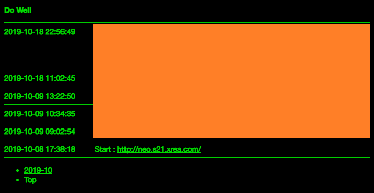
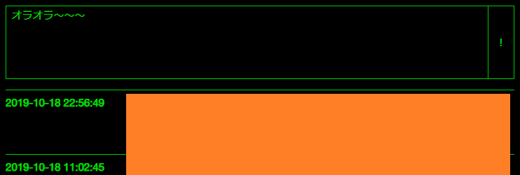

PHP で自分だけの簡易 Twitter を作ってみた
最近、ちょっと過激なツイートをするとすぐにアカウントロックされて1週間とか使えなくなるので、自分だけの Twitter を作ることにした。
無料枠の GCE インスタンスに、Apache と PHP をインストール。単一の PHP ファイルで動作する CGI スクリプトとして組んでみた。

↑スクショ。
そのものズバリではないが、ソースコードは以下に置いた。
公開しているサイトは、GCE インスタンスの Public IP そのまんま。HTTPS 化もしていない。やろうと思えば Freenom で無料ドメインを取り、Let's Encrypt で無料 HTTPS 化もできるだろうが、ガッツリ作り込む気もなくてこんな感じ。
ツイートはテキストファイルに保存していて、月ごとにファイルを分割するようにしている。テキストファイルは Apache のコンテンツ置き場 (/var/www/html/) 以外のところに置いてある。DB とか使わないめんどくさいし。ｗ
通常はツイートを閲覧できるだけの画面なのだが、特別なパラメータを設定すると、投稿フォームが表示される。管理者限定の機能だ。

フォームは自分自身に POST 送信するようになっている。別のパラメータで投稿フォームにパスワードを埋め込むと、そのパスワードをチェックした上で、ツイートがテキストファイルに保存される仕組み。正しいパスワードはスクリプト外に記してある。
テキストエリアに入力された文字列は、\n で改行コードが記されている。コレを文字列に変換し、1行のデータとして保存する。文字列置換は preg_replace() 関数で行える。
同様に、http:// とか https:// とかいう URL 文字列が出てきたら、それは a 要素をかませてリンクとして保存しておきたい。以下の置換スクリプトが参考になった。
投稿日時を一緒に保存するため、date() 関数を利用した。php.ini で設定しているかもしれないが、
date_default_timezone_set('Asia/Tokyo');
を入れておくとタイムゾーンを確実に合わせられる。
うまく処理ができず、原因が分からない時は、以下のコードを埋め込んでエラーを画面上に出力させた。
ini_set('display_errors', 'On');
色々言語学習しながら作ったモノなので、雑なところがかなり多いが、投稿は自分だけしかしないし、見る人もそういないだろうからこれでおk。